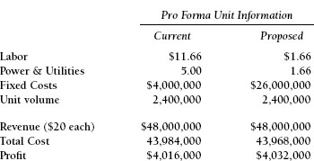
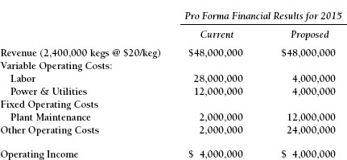
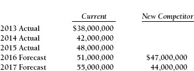
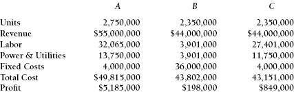

APPENDIX F

Comprehensive Case Study: Bensonhurst Brewery
This case study analyses a decision that a company must make focusing on whether it is favorable to have its costs fixed or variable depending upon circumstances and expectations for the business. This issue is discussed fully in Chapter 9.
The Bensonhurst Brewing Company has some major decisions to address. You have been hired by that Company’s senior management to assist them.
The company currently operates a labor-intensive business. Its costs of labor and product are volume-sensitive, and therefore quite variable. Bensonhurst has the opportunity to replace its facility with a very modern, technology-driven operation. The proposed facility would employ state-of-the-art brewing processes that have already proven successful by much larger competitors. The new production techniques would greatly reduce the labor content of the operation. Both the existing and proposed new facility would have the productive capacity to handle forecast volume increases for the next three years. Capital expenditures are not an issue in this circumstance.
The marketing director is concerned. A major brewing company is considering entering the marketplace currently served and dominated by Bensonhurst. It is possible that this competitor may absorb all of the growth projected in this market if it begins production. Of greater concern, the new competitor may severely penetrate Bensonhurst’s existing market share and cause its revenue to actually decline.

Here is a financial presentation of the profitability of this business at current level of volume:

The company has the financial capability to build the new facility. However, cost and competitive issues are difficult to resolve. Help this company to evaluate the marketing, competition, and profitability issues associated with this decision. What would you do? And why?
This is the revenue history and a forecast without and with the entrance into the business of a new company.

Appendix F Answer Key
For this exercise, we need to look at the fixed-costs and variable-costs alternatives. Whether you want costs to be fixed or variable depends upon what you expect future volume will be. In this particular situation you also have to decide whether you expect to have a new competitor—and if you expect that it can gain market share.
In order to advise Bensonhurst we want to look at three situations. In Exhibit F-1:
- Column A is the profit forecast for 2017 without a new competitor at current variable-cost structure.
- Column B is the profit forecast with the new competitor and a fixed-cost structure.
- Column C is the profit forecast with the new competitor and a variable-cost structure.
Exhibit F-1. Fixed Versus Variable Costs

The exhibit shows that, if volume is improving, then fixed costs are beneficial. This is called operating leverage. If you expect volume to decline or if there is great uncertainty (will we have a competitor, or won’t we?), you are better off with varible costs. The profit opportunity is significant if you fill up an airplane or run an oil refinery at full blast. Both airlines and oils refineries are fixed-cost businesses, where costs do not really increase with volume. On the other hand, if volume is down drastically or an oil refinery isn’t too busy, the financial losses will be dramatic. You can’t run half an airplane or shut down a refinery a few hours per day.